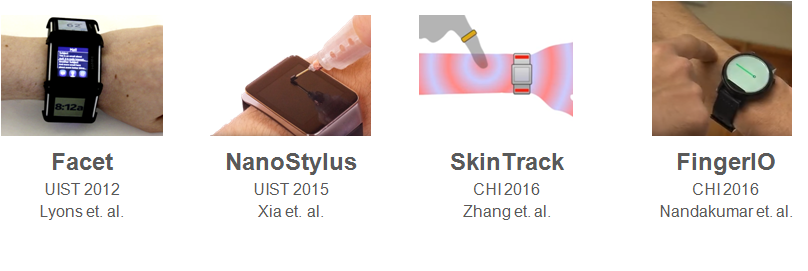
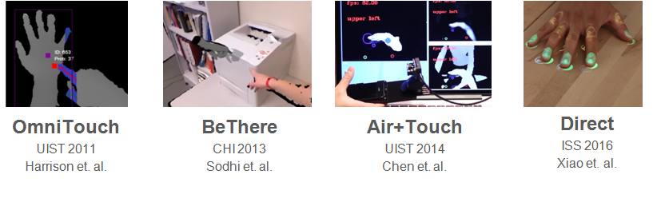

This research is GRID, gesture Recognition via infrared and depth detection.
Lets discuss following points here
In 2012, Kent Lyons published his research on Facet, where he came up with the most intuitive solution to solve the small size of interaction surface. His solution was to increase the number of screens such that the screens surrounds the user’s wrist. However, we can see that this is bulky and definitely expensive. In 2015, a few people from Autodesk integrated a solution used in tablet and phones on watches - a stylus. This isn’t exactly bulky, but not many people would appreciate wearing a pointer thingy on their finger everytime they want to use their watch. Then people started coming up with more ingenious solutions. Both in CHI 2016, SkinTrack used the electric signals from a ring worn by a user to measure the distance and FingerIO uses echolocation to detect the finger location. While the ring required the user to wear another wearable for it to work, a ring is certainly less troublesome than a pointer but lets try to get rid of that too. Normal watches uses tactile feedback, FingerIO uses sound. Whats left?
In carrying out this research, we sourced out a number of related papers. Here are some of the prominent research work done on these areas. Most of them use the Kinect Depth sensor to detect fingers (kinect is different as it uses speckled reflection and an RGB to improve results). The closest we have is Air+Touch which uses a camboard nano mounted to a phone. While similar device, it is fundamentally different in the platform the user is interacting on. Holding a phone on one hand and cam is looking down on the user’s
With our curent technology, smart watches allows for this. Some are easier, (the green ones), some harder. But admittedly, still possible. We want to expand the interactive surface to make existing interactions easier and allow for more of other interactions. In particular, we want to achieve - this (update green and yellow highlights). The green ones are the ones we managed to achieve, while the light yellow ones are the ones that are easily achievable with the algorithms and techniques that we are currently using. The darker ones are the ones which with a slight extension, will be doable as well.
We saw that the Depth was noisy. However, the illumination data was much more stable Filtering -> Rotation & Reflection -> Setting Interest Region->Getting X Maximal graph -> Finding 80th Percentile of value->Getting Y Maximal Graph-> Getting Depth of Interest Region-> Detecting Finger->Sobel Filtering with Threshold based on Depth-> Getting Direction and Magnitude -> Getting Centers -> Distinguishing Fingers -> Local Comparison -> Monitoring States -> Getting local State and duration -> Getting Gestures from State -> Using State Diagram